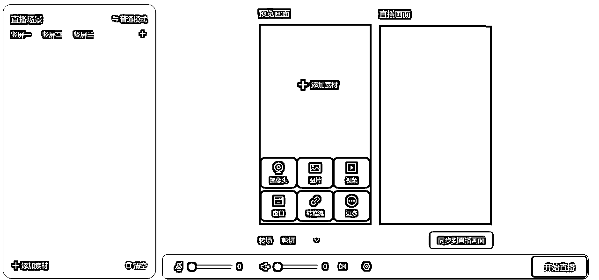

来源：https://wp596ankkt.feishu.cn/docx/TxMfdPOnJojwBjxOwX0cArZ5nv8
生财的圈友大家好，我是华聪，4年的生财圈友，一直在生财看大家的分享，自己分享的内容比较少，最近这段时间，我一个朋友在操作支付宝无人直播带货的项目，刚开始我没怎么关注这个项目
最近几天他做的还不错，我就想着在生财搜一下，看有没有圈友出这个教程的，搜索了一圈看到了不少圈友发的风向标，说支付宝直播带货，但是没找到详细的操作步骤，
支付宝直播这个也算是一个蓝海玩法了，既然没圈友写操作步骤，我就自己写出来，
我问了我朋友很多关于操作的步骤，才把整个流程跑通
今天这篇就详细的拆解支付宝无人直播怎么做
现在是蓝海期，平台允许优质的录播内容，这样的好处就是我们设置好直播素材，根本不需要自己去直播，而且不用担心录播违规，24小时都可以直播带货，可以批量复制，矩阵化操作
直播带货的产品，我们可以直接在支付宝的选品广场自己选，选择好之后，直接加入带货车里，就可以开播带货了，支付宝的选品广场，种类齐全而且佣金高，我们最高可以选择50%佣金的产品带货，卖的产品最高有一半的利润我们可以赚到，而且不用发货，不用囤货，非常适合操作
这个是我在选品广场看筛选的佣金高的，很多佣金都是50%的品，而且客单价不高，成交率会不错。
支付宝的月活跃用户有9亿，而且很多都是有消费能力的用户，而且现在做，平台还有流量扶持，是一个不错的蓝海市场，做的人少，用户量大。
操作这个玩法， 靠带货赚佣金是一个最直接的赚钱点，我们带货的时候，可以选择一些常用的，佣金高的带，这样一天一个号卖1000左右的GMV，我们的佣金也有好几百
这个就不用多说了，做熟悉以后，可以矩阵化操作，还可以带学员赚钱，不用收太多，做好教程，让别人能跟着步骤操作就可以，现在是红利期，知道的人少，而且信息差也有，靠这个也是一个可以变现的点。
我看外面有不少都是收几百带别人操作这个项目的。
最后就是这个项目的实操步骤，拆解这个项目之前，我自己已经完全跑了一遍开播带货的流程，
打开支付宝搜索框，搜索支付宝直播，然后点击进去，没认证主播的，点击去认证，
认证成功以后，点击带货广场，没开通带货宝的，会提示先开通带货宝。
保证金是需要缴纳100元的，现在是活动期间，限时免费开通，把带货宝开通以后，就有了直播带货功能
进入选品广场，我们可以选择一些通用的直播商品进行带货，建议选择一些佣金高的，销量高的商品进行带货，也可以选择自己擅长或者是喜欢的商品进行带货，把选择的商品加入带货车就可以了，以后开直播的时候，就是从自己的带货车，上架商品带货的
就是这个直播软件，支付宝官方的，
软件安装说明
https://shenghuohao.yuque.com/vtztm0/odmr7z/ueo7zt6fz5nssepw?enableWK=YES
下载安装软件以后，打开软件，选择一键开播
在直播软件里，我们可以上传直播需要的素材，素材我给大家准备了一份各行业需要用到的素材，
支付宝无人直播素材
链接：https://pan.baidu.com/s/11yGDZk303xrwPfUJEF1ZBA?pwd=9999 提取码：9999 --来自百度网盘超级会员V7的分享
获取素材还有一种方式就是去录制别人的直播画面，看自己带什么品，去找一些画面优质的和自己的品一样的直播间，最好是不带别人肖像的，然后用录制软件录制素材再开播
录制软件和教程，在刚才的支付宝无人直播素材里，保存就可以全部领取了
打开软件，选择添加素材，准备卖什么品，就添加什么类型的录播素材，然后点开始直播

点开播以后，这里的直播间类型可以选择正式直播，封面图可以选择一个产品相关的视频截图或者是在稿定设计里套模板，做一个直播封面图上传进来就可以
设置好上面的内容，就可以点开始直播进行开播了
开播以后，可以在带货车把直播要卖的商品上架，这样整个流程就跑了一遍。
下面的资料是操作这个项目需要用到的一些资料和文档以及一些常见的问题解答
支付宝无人直播带货资料
我发的这个就是我操作的实际步骤，不能保证圈友操作一遍就马上能赚到钱或者是取得什么样的成绩
操作项目大家都知道，不管是我们操作任何项目，或者是做什么事情，肯定会遇到各种各样的问题，如果我们能保持好心态，遇到问题就解决问题，肯定做到最后的效果不会太差，但是如果遇到问题不解决，直接就退宿了， 就说不行，要换其他的做，最后肯定是什么都做不好。
我自己也在一直操作各种项目，关于工具的，关于流量的之类的，自己也遇到各种问题，比如封号了，限流了，刚开始的时候，可能会有一些焦虑，感觉自己不行，或者是项目不行，就想着去换项目，这个心态肯定是不对的，
最近这两年，在生财看到的分享，或者是付费跟其他有结果的人学习，学习别人的经验，自己能明显的感觉就是心态不一样了，只要是整体的方向没错，后续遇到的问题就解决问题，能做出来多大的结果，跟解决多少问题是成正比的。